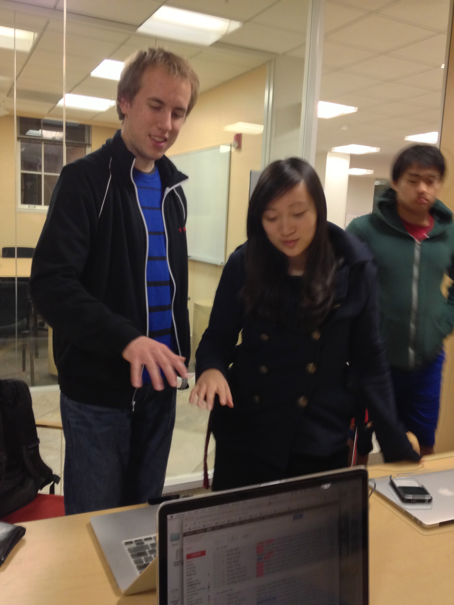
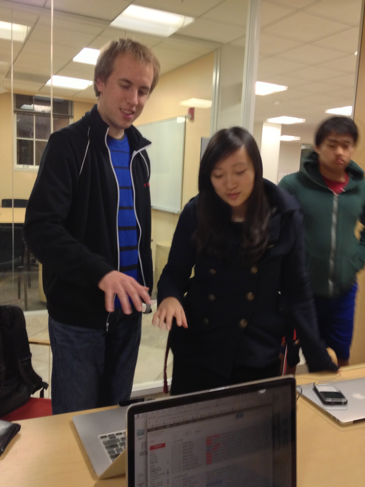

Milestone 3: Functional Prototype 1
What happened this week
Based on our Wizard of Oz prototyping session last week, we came into class on Tuesday still feeling very not completely satisfied with our idea and during class talked about pivoting to a new idea about creating an application that would allow fencers to practice by using the Leap to track the angles and positions of their wrist and in turn, show the user a computer generated wrist of an opponent fencer, thereby training the user to deflect jabs of the opponent by observing the movements and positions of the opponent's wrist. After agreeing on this idea after class, we started to implement the functional prototype for Thursday.
Since our coach didn't show during the coach meet-and-greet a few weeks ago, we finally had the chance to meet with Rob Ryan, our mentor, on Wednesday night. We explained our situation to Rob and he led us back to square one in terms of brainstorming ideas and designing to solve needs. This turned into a massive 3.5 hour brainstorm and work session. We went through a lot of whiteboarding of ideas. At first, we honed in on the application area of travel, specifically traveling to Asia, and a few problem areas that arose there were: something to do with dirty squat toilets in Asia, haggling, communicating over the language barrier, and jaywalking.
Images of our first brainstorm session about travel


However, in generating possible solutions to solve these problems above, again really focusing on the need aspect of the design, we got stuck again. The problems in the area of toilets and bathrooms in Asia resonated deeply with us, but the biggest problems we sas were simply: the toilets were dirty, smelled bad, and unhygenic, which were not problems we could see the Leap helping to solve. Other problems, like haggling, were found to have knowledge at the center. For example, we thought of an application that could help sellers and customers agree on a price by having them move their hand up or down in correspondence with the price of the sale, such that agreeing would mean their hands were on the same level. However, we went deeper and realized that that was not the main problem of haggling--the main problem is not knowing if you (the buyer) is getting ripped off or not due to being a foreigner. This problem was not one we saw gestures being very useful for.
Images of our second brainstorm session about payments, acting out the experience
 

Thus, we went back to brainstorming again. We finally came to talking about the problem of losing and keeping receipts, losing track of your purchases. From there, we started to bond over how signing receipts in stores doesn't really do anything - it seems like signatures would be used for identity confirmation, but they are never checked. We started to talk about environmental issues as well, and speculated how many trees could be saved by simply not printing out receipts at the end of every transaction and instead making the experience purely digital. Having each known and talked to people who have had their credit card numbers stolen, we also converged on the need to improve security in making purchases. This being a particularly bad flu season, we also talked about the need to prevent the spreading of illnesses in public spaces or publicly used items, such as the pens people use to sign their receipts in busy supermarkets or stores.
Our final idea and Looking Forward
Our final idea is a simpler, more secure, and gesture/digital-based point of sale system. This system would let customers digitally sign their receipts by signing in the air and would be more secure by incorporating photographic elements and actually checking the signature against the buyer's other signatures in the past. This system, using just a laptop and LEAP, could potentially replace very expensive payment machines and systems already in large stores, and could be very useful for small businesses who don't have a lot of money to spend on their payment systems.
Feature choices with Rationale
- Credit Card Detection
- Rationale:
- Photo Authentication
- Rationale:
- Visual receipt
- Rationale:
- Digital Signature (with confirmation of signature authenticity)
- Rationale:
- Creating and curating a storage space for digital receipts
- Rationale:
While you could hand over your credit card to the cashier to swipe and process the payment, there is still the hygienic issue of someone else touching your credit card. With our system, we want to eliminate the need to hand over your credit card (minimizing the possibility of even the cashier stealing your identity or overcharging you), so simply scanning your card into our system would be safe and clean.
Sometimes stores don't check your photo ID upon purchase with a credit card, which makes it easier for theft to occur. Our system would compare your photo ID on record with the way you look now in the store by leveraging the web cam of the laptop.
Receipts are sometimes hard to read and check over for items simply because each item is described in a way that's foreign to the customer, for example, a pair of skinny blue jeans with flower patterns down the side of the leg could just be called "JEANS BDCDT" on the receipt, which doesn't meet the customer's mental model toward the jeans. Instead, a visual receipt will allow users to quickly scan and check their purchases because users can quickly match the image on the receipt with the real item. This matching activity is more efficient and accurate than having to translate and then match obscure text labels of objects assigned by the store to the objects users have bought.
Stores don't verify your signature. Several of the people we talked to had actually experimented with signing differently on receipts just to see if anything would happen (for example, signing upside down, just writing a line or drawing a circle, etc.) This makes theft easier and seems counterintuitive - a signature should help to increase security. By having the customer sign and approve their purchase with the LEAP and then verifying it digitally, we add a layer of security to the buying process. The virtual in-air signature that uses gestures is better than the current system of just having a pen and a machine to sign on because it is more hygienic as well.
From this website we gather that the environmental footprint due to creating paper receipts is HUGE. According to the website, receipt paper demands in the US are 640,000 tons per year, which equates to 9,600,000 millions trees cut down each year just to produce paper receipts. From there, there is even more damage done with the amount of water, oil, and CO2 used and emitted. Thus, there really is a need to move from paper receipts to digital ones. By keeping receipts digitally in one place, we prevent customers from losing physical receipts as well, which saves them from stress and makes it easier to verify their purchases when they have to pay off their credit cards.
Implementation Progress: Because we struggled so much with music early on in the process of this project and then started to implement the fencing app idea on Tuesday, only to pivot to this final idea, we have unfortunately not been able to create our first functional prototype in time for class today. However, we have prototyped the system by acting it out ourselves and will come to class on Thursday with a wizard of oz instead to still collect feedback and test out the idea/get feedback from our peers and the course staff before implementation. We will definitely catch up to the milestone on user testing for next week--but our delayed progress this week is simply due to a delayed first meeting with our mentor and pivoting from our initial idea.
Prioritized To-Do in Implementation and Design
- Thursday 2/21: Email around campus to ask if we can set up system in real environment to test
- Thursday 2/21 and Friday 2/22: Do more wizard of oz testing and crummy trials
- Friday 2/22 - Sunday 2/24: Work on signature detection, recording, confirmation
- Saturday 2/23: Work on credit card detection and photo authentication
- Monday 2/25: Work on visual receipt and figuring out how to store receipts as PDFs
- By Tues 2/26 First functional prototype done, test in Tresidder or real world situation
Preliminary Thoughts for User Testing
- Fake check out line experience
- Ask a booth in Tresidder to try it with real clients
- Test on students, elderly, moms - people likely to have lots going on and potentially lose lots of receipts
- Test in bookstore